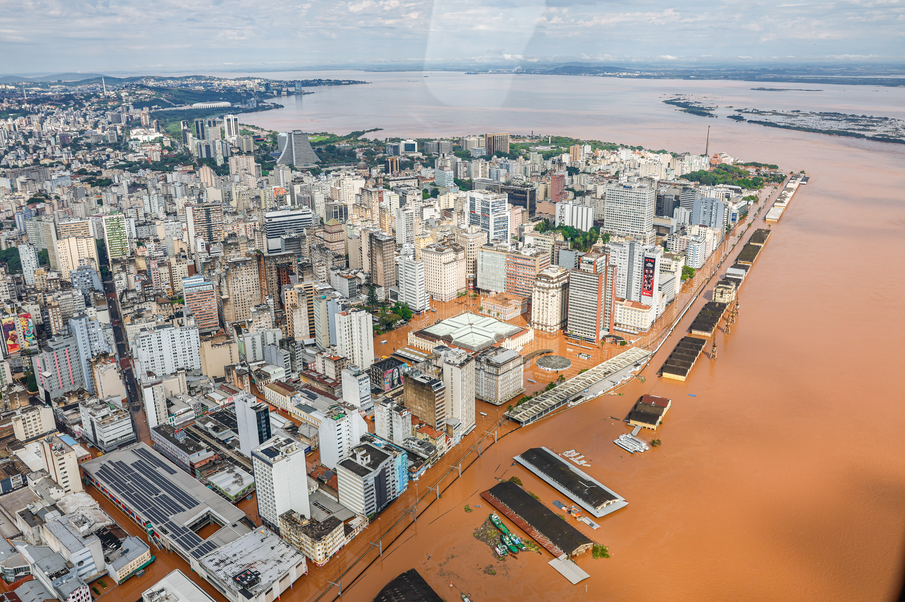

In this page, i'll be talking about the future of smart materials, and will they be used in future building projects and how will they be used
The amount of money that cities spend to fix potholes, cracked sidewalks and bridge pillars is insane. The future of construction is smart materials, self healing concrete would change the way we see cities and buildings.
We wouldn't have to spend money on any of those problems, the city would save billions of dollars, with the problem out of the way cities could use the money for better use, like for the homeless, or housing shortages, there would be more options now that they actually had the money to spend.
This would be great for sidewalks, potholes and bridge pillars, it would definetely be less annoying for drivers aswell because potholes can be very annoying for people who drive, when you're car randomly hits a pothole, this can also decrease driving risks.

There's always huge problems with floods and storms around the world, not even in just one place. This is a global problem for lots of cities and places, Future cities should more forward and focus on smart pavements.
The polymer surface would absorb the flash food water immediately, it would filter any bacteria or anything disgusting in it and it would store it in a underground system where it could be reused for the sewer system or something else
This would be really beneficial for us, it would decrease the percentages of floods that are happening ever year all the while using the water for something good.
In general all of these smart materials would be able to deduct the overall waste, for self healing concrete, if we use self healing concrete buildings will last longer and we won't have to keep breaking and renewing, causing disturbances and blocking words.
The stormwater flood wouldn't get thrown into waste, it would actually be used for something that would benefit us and something that we potentially need.